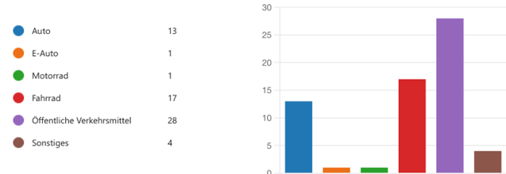
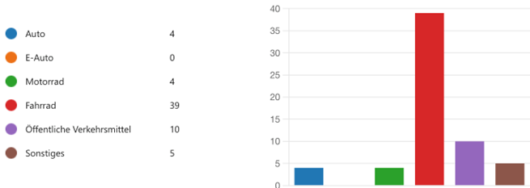

Verkehrsnutzung der Schüler unserer Schule
In dieser Umfrage, die Sie gerade zum Teil beantwortet haben, wurde die Q11 des Gymnasiums Kirchheim befragt zu ihrer Verkehrsnutzung. Die Umfrage fand zweimal statt: einmal im Sommer und einmal im Winter. Anschließend wurden die Ergebnisse beider Umfragen miteinander verglichen, um herauszufinden in welcher Jahreszeit der Verkehr schädlicher für die Umwelt ist.

